Faites glisser pour tourner · molette pour zoomer · cliquez sur les objets
Baptiste DIDIER
Étudiant en 3e année de BUT Informatique Stage chez Actemium à partir de janvier 2027
Étudiant en 3e année de BUT Informatique à l'IUT Nord Franche-Comté, parcours Réalisation d'applications, je m'intéresse particulièrement au développement informatique, aux nouvelles technologies et aux possibilités qu'offre l'informatique pour simplifier le quotidien.
Curieux et autonome, j'aime apprendre, expérimenter et concrétiser mes idées. Je privilégie une approche pratique : comprendre un besoin, trouver une solution, la développer et m'assurer qu'elle fonctionne réellement. J'apprécie aussi le travail en équipe, le partage de connaissances et la découverte de nouvelles technologies.
Après mon BUT, je souhaite poursuivre mes études en me spécialisant en cybersécurité ou en intelligence artificielle, afin d'approfondir mes compétences et de travailler sur des sujets qui me passionnent. À plus long terme, j'aimerais entreprendre et créer ma propre entreprise, tout en restant ouvert aux opportunités professionnelles qui pourraient se présenter.
En bref
Localisation
Vézelois, Territoire de Belfort (90)
Mobilité
Permis B, véhiculé
Langues
Français, anglais (B1)
Formation
BUT Informatique, IUT Nord Franche-Comté · 3e année
Expériences
Stage chez EzDEV (avril – juin 2026) · stage chez Actemium dès janvier 2027
Qualités
Autonome, organisé, curieux, à l'aise en équipe
Loisirs
Football en club depuis 14 ans, parcs d'attractions, jeux vidéo de gestion et de stratégie
Mon stage, mon application publiée sur les stores et mes projets les plus aboutis, réalisés à l'IUT ou sur mon temps libre. Choisissez une catégorie, puis ouvrez un projet pour voir son contexte, ses fonctionnalités, mon rôle et les difficultés rencontrées.
stage-ezdev stage
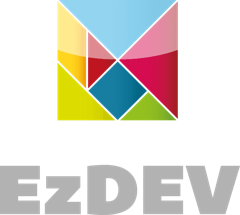
EzDEV : moderniser une application de gestion documentaire
7 avril – 11 juin 2026 · Stage de 2e année · EzDEV, Montreux-Château · au sein d'une équipe de 5
EzDEV, une entreprise de 5 personnes, édite EzGED, un logiciel de gestion électronique de documents écrit en Python et utilisé par des clients via plus de 30 distributeurs. Ma mission : préparer son passage de Python 3.11 à Python 3.13 sans rien casser, en modernisant les outils de développement et en automatisant les tests.
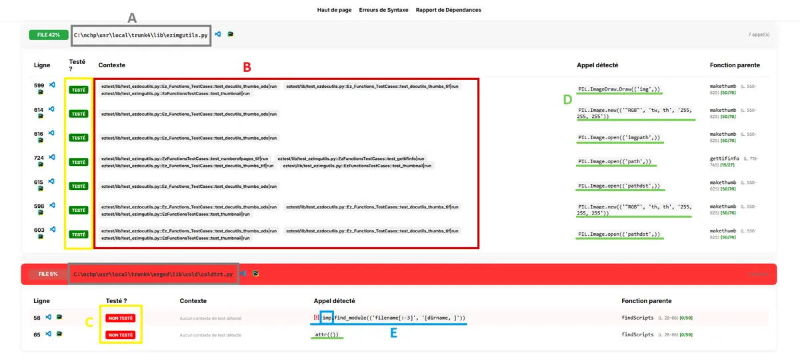
Le rapport généré par mon script d'analyse : chaque appel à une dépendance, testé ou non
1. Auditdépendances et code incompatibles
2. Mesurecouverture des tests existants
3. Migrationadaptation du code à Python 3.13
4. Automatisationtests et rapports à chaque modification
Ma démarche, étape par étape
Ce que j'ai fait
Audit du code et des dépendances avec ruff et deptry, pour repérer en quelques minutes les zones à risque
Script d'analyse (LibCST + coverage.py) qui liste chaque appel à une dépendance, indique s'il est testé et signale les modules supprimés en Python 3.13
Suites de tests générées à partir d'un fichier JSON, pour vérifier chaque bibliothèque après une montée de version
Renovate dans la CI/CD GitLab : les mises à jour de dépendances arrivent sous forme de Merge Requests à valider
Documentation technique et schémas pour expliquer mes outils à l'équipe
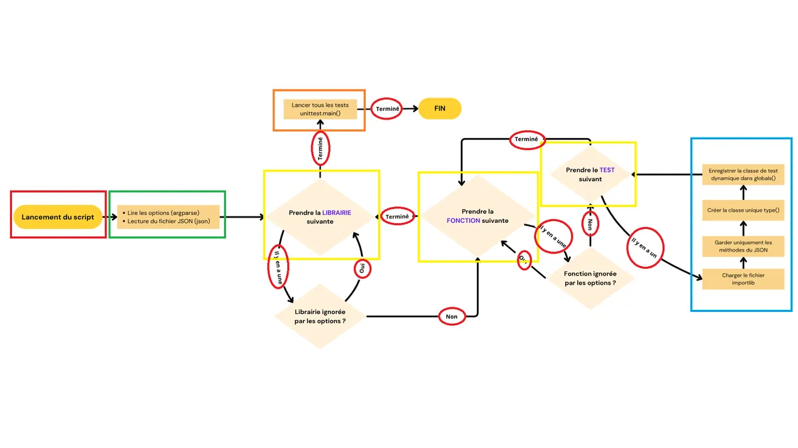
Le schéma que j'ai dessiné pour présenter mon script à l'équipe
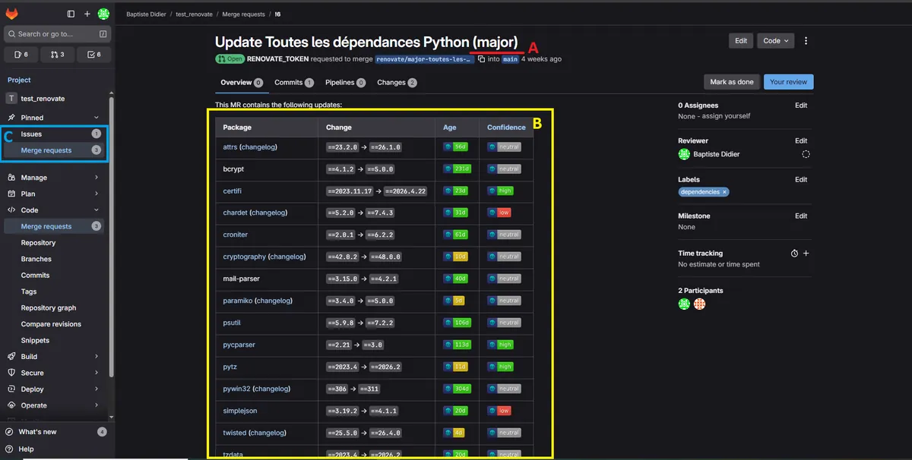
Une Merge Request ouverte automatiquement par Renovate
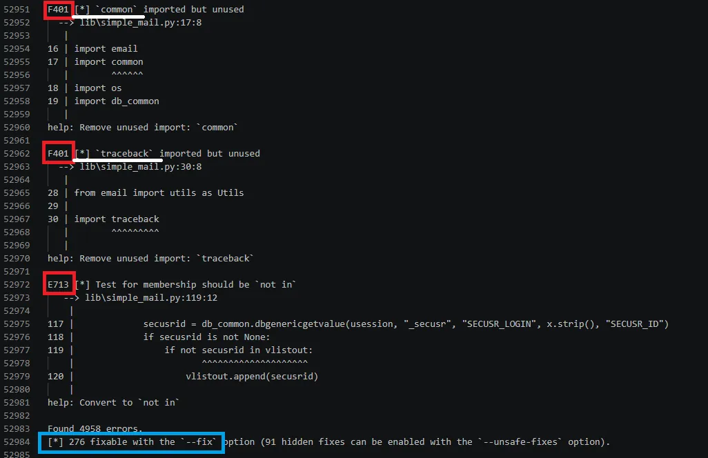
L'audit ruff du premier jour, pour prendre en main le code
Mon rôle
Stagiaire développeur, encadré par le gérant de l'entreprise. J'organisais mon travail par semaines et par jalons, je documentais mes analyses sur GitLab et je tenais l'équipe au courant de mon avancement pour ajuster les objectifs.
Le défi
Changer de version sans régression, sur un code que je ne connaissais pas. Plutôt que de corriger au hasard, j'ai d'abord mesuré ce que les tests couvraient, puis automatisé leur lancement : chaque modification est vérifiée avant d'être livrée.
Ce que j'en retiens
Sur un code existant, on lit avant d'écrire, et on ne livre rien sans l'avoir testé.
Python
LibCST
coverage.py
unittest
pytest
ruff
deptry
uv
Renovate
GitLab CI/CD
Jinja2
Code privé, propriété de l'entreprise : les captures viennent de mon rapport de stage.
parktracker en ligne
ParkTracker : l'application des visiteurs de parcs
2026 · Projet personnel, réalisé seul · application publiée sur l'App Store et Google Play
Une application mobile qui transforme chaque visite de parc d'attractions en aventure mesurable : elle détecte automatiquement les attractions faites grâce au GPS, compte les pas, la distance et même les forces G subies dans les loopings. Plus de 50 parcs sont reconnus, en Europe et aux États-Unis.
Le site vitrine parktracker.fr
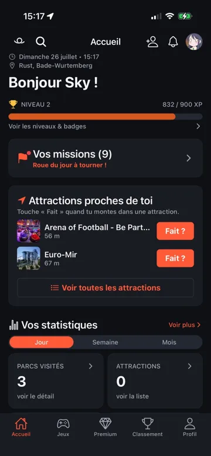
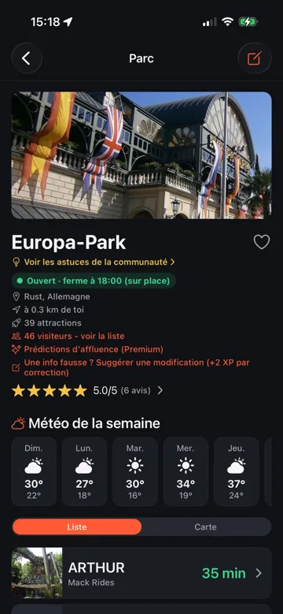
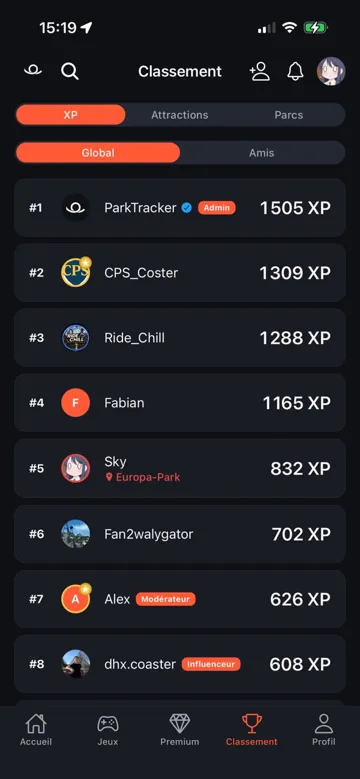
Quelques écrans de l'application (captures de l'App Store)
Fonctionnalités principales
Suivi automatique des attractions, des pas, de la distance, des calories et des forces G
Temps d'attente en direct, courbes d'attente et prévision pour le reste de la journée
XP, missions et badges, et un classement entre amis
Avis et photos sur les parcs et les attractions, et un récap annuel façon « Wrapped »
Abonnement Premium : prédictions d'affluence et alertes quand une file devient courte
Traduite en cinq langues, avec un mode hors-ligne
Sous le capot
Une application Expo (React Native) en TypeScript : un seul code pour iOS et Android, environ 48 000 lignes. Le back-end repose sur Supabase : base PostgreSQL, connexion avec Apple ou Google, et dix fonctions serveur (Edge Functions) pour les temps d'attente, les notifications et les abonnements (RevenueCat). L'état est géré avec Zustand et TanStack Query, les tests avec Jest, et la version iOS est compilée depuis Windows avec EAS Build. Des scripts Python importent les données des parcs.
Mon rôle
Je porte le projet de bout en bout, seul : l'application, le back-end, le site vitrine, la publication sur les deux stores et les mises à jour, publiées dans un journal des nouveautés.
Le défi
Compter une attraction sans que l'utilisateur touche à son téléphone, même application fermée : l'app s'appuie sur la position et sur le temps passé dans la zone de l'attraction. Autre défi : prévoir l'attente de la journée à partir de la fréquentation réelle du parc.
Évolutions
De nouveaux parcs ajoutés régulièrement, et des améliorations à chaque version (1.0.4 → 1.0.8) selon les retours des utilisateurs.
Sept. 2025 – mars 2026 · Projet de 2e année (SAÉ S3-S4) · équipe de 5
Le site complet d'un grand événement de course au circuit Bugatti du Mans : billetterie, boutique, carte du circuit, prestataires… Chaque utilisateur a son propre espace selon son rôle (visiteur, prestataire, administrateur). Projet mené en méthode agile, par itérations courtes, à partir d'un cahier des charges.
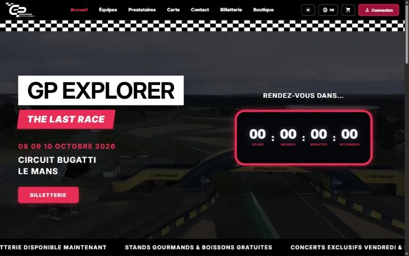
La page d'accueil, avec la vidéo du circuit en fond
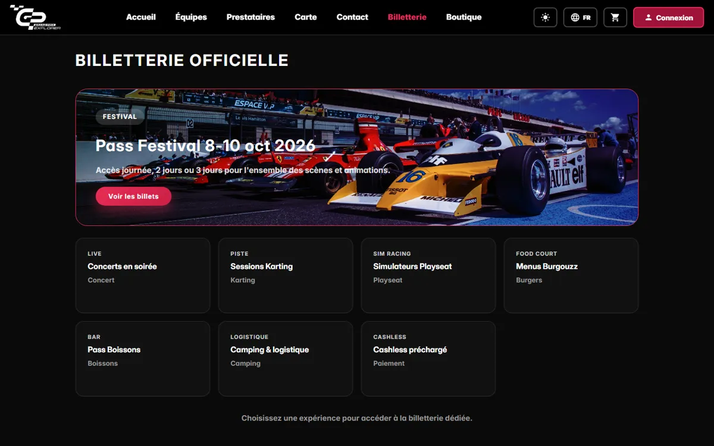
La billetterieLa carte interactive du circuitLes écuries et leurs pilotes
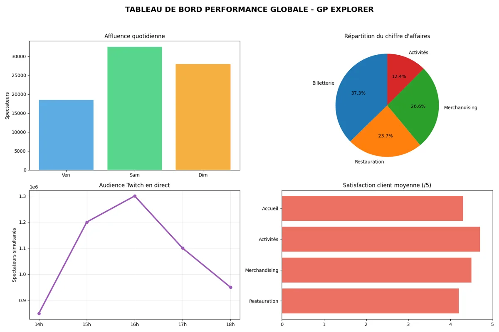
Le tableau de bord des statistiques (rapport)
Fonctionnalités principales
Billetterie par expérience (pass festival, karting, simulateurs, concerts…), boutique et panier
Carte interactive du circuit avec ses parkings et son camping (Leaflet)
Espace administrateur : services, boutique, utilisateurs, messages, carte et contenu de l'accueil
Espace prestataire : ses produits, son compte et ses statistiques de ventes
Tableaux de bord (Chart.js) et QR codes générés et lus dans le navigateur
Connexion par identifiant ou compte Discord, site traduit en trois langues (FR, EN, ES)
Sous le capot
Une API Express de 74 routes documentée avec Swagger, 16 modèles de données Sequelize sur PostgreSQL, et des droits vérifiés côté serveur (jetons JWT, rôles, propriété des données). Le site est une application Vue 3 avec Pinia et Vue Router.
Mon rôle
J'ai développé le site en équipe, en m'occupant de l'API (le serveur Express) et du front (l'interface en Vue.js).
Le défi
Avancer à cinq sur le même code pendant plusieurs mois : découper le travail en itérations courtes et se répartir les tâches pour ne pas se marcher dessus.
Évolutions possibles
Mettre le site en ligne avec une base hébergée, et ajouter des tests automatisés sur l'API.
Sept. – nov. 2026 · Projet personnel, réalisé seul
Un éditeur vidéo qui tourne entièrement sur la machine, dans le navigateur : import instantané, masques de flou, aperçu en temps réel et export 4K à 60 i/s. Aucun compte, aucun envoi de fichier, et seulement ~250 Ko de code, sans Electron ni dépendance npm.
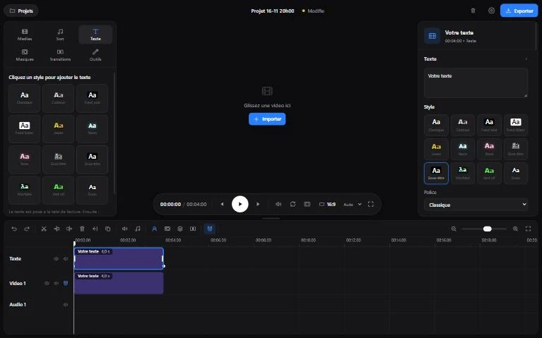
L'éditeur : médias, aperçu, inspecteur et timeline
Fonctionnalités principales
Montage multipiste : vidéo, son, textes stylés, masques, transitions et outils de découpe
Import de fichiers ou par lien (TikTok, Instagram, YouTube) grâce à yt-dlp
Aperçu et export avec exactement les mêmes shaders : ce qu'on voit est ce qui sort
Installation en un seul fichier sous Windows, script pour Linux, et une page d'autotest
Sous le capot
Effets en WebGL2, décodage et encodage sur la carte graphique avec WebCodecs (NVENC, Quick Sync), et un petit serveur Node.js pour les fenêtres de fichiers, les téléchargements et l'assemblage MP4 : environ 17 000 lignes de JavaScript.
Le défi
Rendre un rush 4K 60 fluide. En repensant le décodage (un décodeur par vidéo, le plan suivant préparé une seconde à l'avance, le son lu sans décoder l'image), la lecture est passée d'environ 10 à 178 images par seconde, et poser un clip sur la timeline de 300 ms à 25 ms.
Sept. – oct. 2026 · Projet personnel, réalisé seul · automatisation
Un outil local qui récupère une vidéo TikTok, Instagram, X ou YouTube, la convertit en 4K verticale à 60 i/s, puis la publie sur mes chaînes YouTube avec son titre, sa description, ses hashtags et une date de programmation.
Étape 2 : vérification 4K, aperçu et découpage
Fonctionnalités principales
Publication en trois étapes : téléchargement et conversion 4K, aperçu avec découpage à la souris, mise en ligne
Titre lu à l'écran par l'OCR de Windows, description et hashtags repris de la vidéo d'origine
Vérifications façon YouTube Studio : qualité, format Short, filigrane, risque de contenu réutilisé
Plusieurs chaînes, et pour chaque vidéo en ligne : programmation, modification et statistiques détaillées
Sous le capot
Un serveur FastAPI relié aux API YouTube Data et YouTube Analytics (connexion OAuth 2.0 avec PKCE), yt-dlp et ffmpeg pour la vidéo (encodage sur la carte graphique), SQLite pour l'historique : environ 4 000 lignes.
Sécurité
Le serveur n'écoute que sur l'ordinateur, les jetons Google sont chiffrés, et l'interface est protégée contre les sites malveillants (anti-CSRF, anti-DNS-rebinding, CSP stricte). Les accès ne sont jamais versionnés.
Juin – juil. 2026 · Projet personnel, réalisé seul · pour une association
Une application de caisse web pour les événements du club : produits, stocks, ventes, statistiques et impression automatique des tickets sur une imprimante thermique, sans fenêtre d'impression.
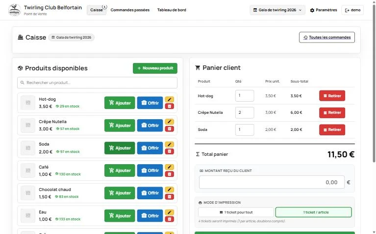
La caisse et le panierLe tableau de bord (données de démonstration)
Fonctionnalités principales
Comptes administrateur et caissier, chaque administrateur ayant sa propre boutique
Événements séparés, chacun avec ses produits, ses stocks, ses ventes et son logo sur le ticket
Caisse avec panier, monnaie à rendre, et un ticket pour tout ou un ticket par article
Impression directe en ESC/POS, logo converti pour l'imprimante, suivi du statut de chaque ticket
Tableau de bord : chiffre d'affaires, ticket moyen, ventes par heure et par produit, historique
Sous le capot
Interface Vue 3 (Vuetify, Pinia, Chart.js) et API FastAPI avec SQLAlchemy, sur SQLite ou PostgreSQL. Mots de passe hachés (PBKDF2), sessions par jetons signés, données validées avec Pydantic et CORS restreint.
Avril – juin 2025 · Projet de 1re année · équipe de 5 · chef d'équipe
Un puissance 4 où l'on choisit la taille de la grille (de 5 à 10 colonnes et lignes) et le nombre de pions à aligner, avec la possibilité d'affronter l'ordinateur. On joue au clavier, dans la console.
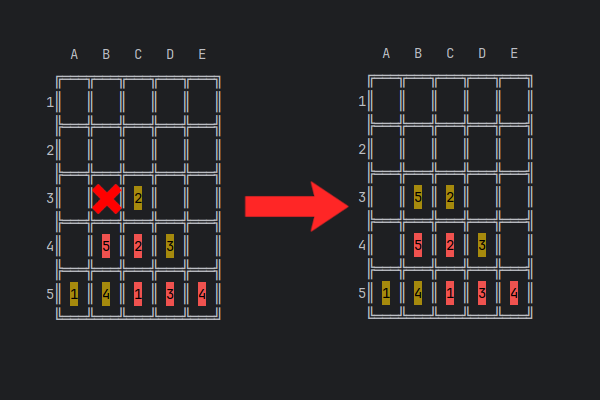
Extrait du rapport technique : l'IA choisit où jouer
Fonctionnalités principales
Grille et règle de victoire paramétrables avant chaque partie
Deux intelligences artificielles : l'une suit des règles (gagner, bloquer, jouer au centre), l'autre note chaque coup possible
Parties rejouables depuis des fichiers d'entrée, pour tester des scénarios précis
Sous le capot
Le jeu s'appuie sur boardifier, un framework MVC fourni par l'IUT. 85 tests unitaires JUnit 5 couvrent le modèle et l'affichage.
Mon rôle
Chef d'équipe : répartition des tâches, suivi de l'avancement et coordination des cinq membres.
Le défi
Savoir quelle IA est vraiment la meilleure. Un banc d'essai les fait s'affronter sur des tournois de 1 000 parties : l'IA intermédiaire bat l'IA à règles dans 68 % des cas.
Taux de victoire de chaque stratégie, mesuré par le banc d'essai
Mars – mai 2025 · Projet de 1re année (SAÉ 2.04) · équipe de 4
Un site de vente de câbles (HDMI, USB-C, Ethernet…) avec un espace client pour commander et un espace administrateur pour gérer le catalogue, les stocks et les commandes, le tout relié à une base de données MySQL.
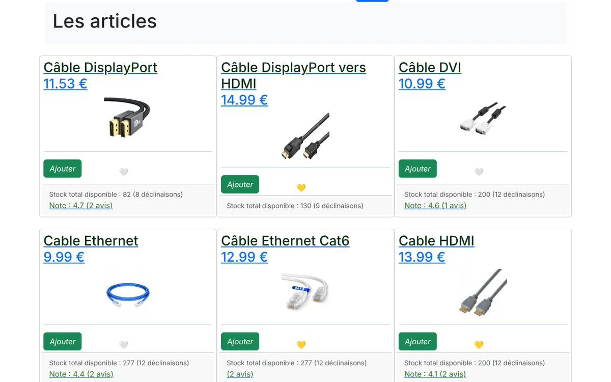
Le catalogue côté client, avec le stock et la note de chaque câble
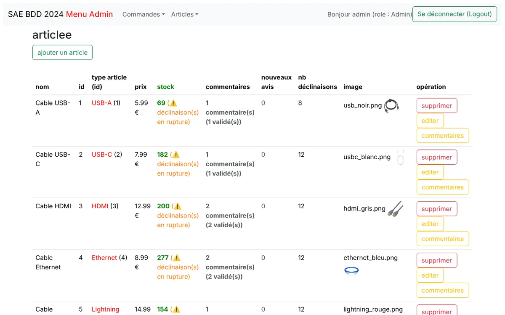
La gestion des articles et des stocks (administrateur)
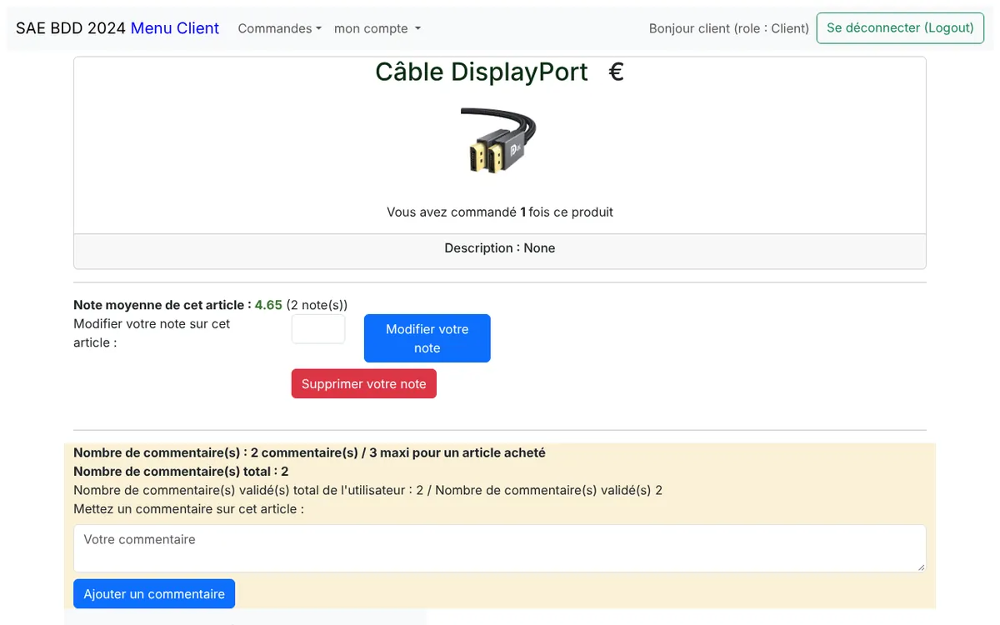
La fiche d'un câble : notes et commentaires
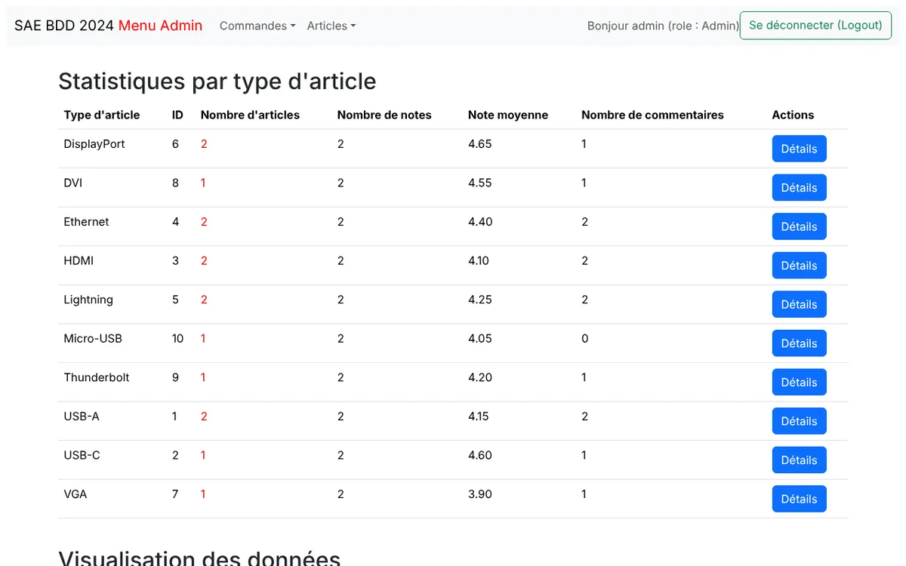
Les statistiques par type de câble (administrateur)
Fonctionnalités principales
Catalogue filtrable par nom, type de prise et prix
Déclinaisons (longueur, couleur) avec un stock pour chacune, et alerte des ruptures
Panier, commandes et adresses de livraison, liste d'envies
Notes et commentaires des clients, validés par l'administrateur
Espace administrateur : articles, stocks, expédition des commandes et statistiques
Sous le capot
Une application Flask découpée en 14 contrôleurs (76 routes), des pages Jinja2 avec Bootstrap, et une base MySQL de 15 tables conçue avec la méthode Merise (MCD puis MLD). Toutes les requêtes SQL sont écrites à la main, et les mots de passe sont hachés.
Mon rôle
La gestion des articles côté administrateur (ajout, modification, suppression, déclinaisons et stock), le suivi et l'expédition des commandes, les notes et commentaires, les filtres du catalogue et une partie du script SQL.
Le défi
Un même câble existe en plusieurs longueurs et couleurs, chacune avec son propre stock : il a fallu des requêtes avec regroupements pour afficher un stock total juste et signaler les déclinaisons en rupture.
Captures réalisées sur le projet relancé en local, avec les données de test.
clip2ep
Clip2EP : le media kit de ma chaîne
Avr. – nov. 2026 · Projet personnel, réalisé seul · site de créateur de contenu
Le site officiel de Clip2EP, mon compte de vidéos sur les parcs d'attractions : 174 400 abonnés sur TikTok et 52 100 sur YouTube. Il sert de media kit aux marques et aux parcs : présentation, audience, partenariats, vidéos et contact.
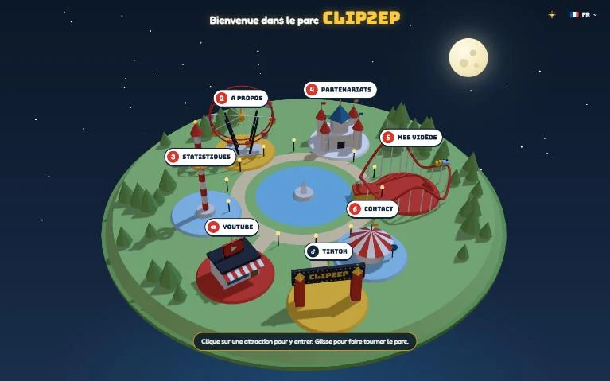
L'accueil : un parc en 3D où chaque attraction ouvre une section
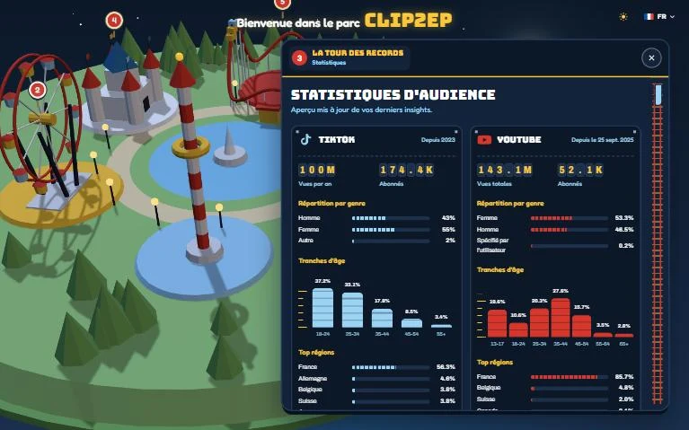
Les statistiques d'audience
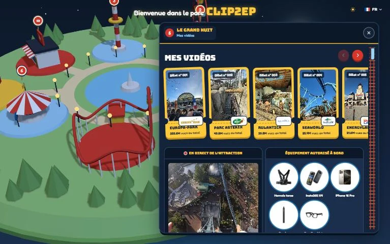
Mes vidéos, rangées par parc
Fonctionnalités principales
Parc 3D interactif (Three.js), avec un plan 2D de secours si la 3D n'est pas disponible
Statistiques d'audience TikTok et YouTube : vues, abonnés, âge, genre et pays
Toutes mes vidéos, rangées par parc, et les partenariats
Site multilingue, thème clair et sombre
Sous le capot
Chaque nuit, une GitHub Action lance un script Python (yt-dlp et API YouTube) qui met à jour les chiffres et garde une copie des vignettes, dont les adresses d'origine expirent. Elle vérifie le fichier avant de l'enregistrer, pour ne jamais publier de statistiques vides.
Nov. – déc. 2025 · Projet universitaire de 2e année · en binôme
Un jeu de tir à la première personne : le joueur doit éliminer des vagues de zombies de plus en plus difficiles pour passer à la manche suivante.
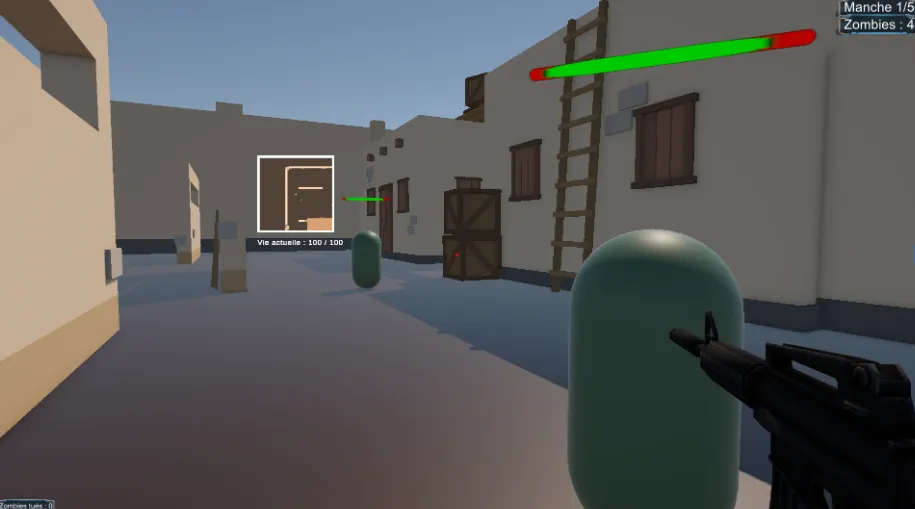
En jeu : manche, zombies restants, barre de vie et mini-carte
Fonctionnalités principales
Système de manches avec une difficulté progressive et un zombie boss
Interface complète : menu, configuration de partie, paramètres, pause et écran de résultats
Touches personnalisables grâce au nouveau système de contrôles d'Unity
Mini-carte, viseur, barre de vie et compteur de zombies tués
Sous le capot
20 scripts C# (environ 2 300 lignes) répartis sur 5 scènes : joueur et tir, gestionnaire de vagues, mini-carte, pause, menus et statistiques de partie.
Mon rôle
Toute l'interface et l'expérience de jeu : menus, écran de configuration de la partie, paramètres et touches personnalisables, menu pause, fin de manche et écran de résultats, mini-carte, barres de vie du joueur, des zombies et du boss, ainsi que l'arme et la condition de victoire. Mon binôme s'est chargé des zombies (déplacements, apparitions, boss), de la carte et des sons.
Le défi
Faire monter la difficulté sans rendre le jeu injouable : le gestionnaire de vagues règle le nombre et le type de zombies à chaque manche.
Déc. 2024 – janv. 2025 · Projet de 1re année (SAÉ 1.01-02) · en binôme
Un programme Java qui modifie des fichiers audio : changer la hauteur d'une voix sans changer sa durée, accélérer ou ralentir un son sans le déformer, ajouter de l'écho.
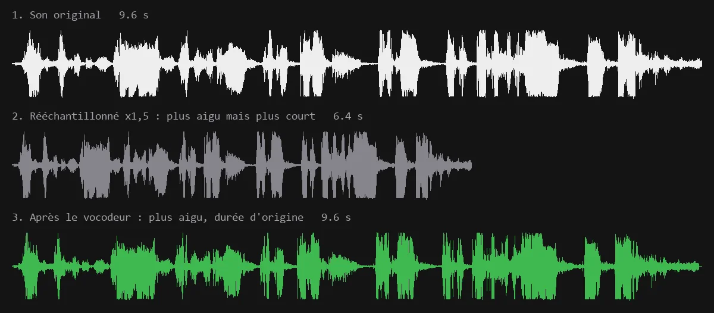
Formes d'onde des fichiers du dépôt, pour un facteur 1,5
Fonctionnalités principales
Rééchantillonnage pour changer la hauteur du son
Trois vocodeurs de plus en plus fins : simple, avec chevauchement, puis avec recherche de corrélation croisée
Écho et affichage de la forme d'onde
Sous le capot
Pour un facteur 1,5, le son est d'abord rééchantillonné : plus aigu, mais plus court (9,6 s → 6,4 s). Le vocodeur l'étire ensuite pour retrouver sa durée d'origine. Chaque étape produit son propre fichier .wav, pratique pour comparer.
Mon rôle
Le rééchantillonnage (changer la hauteur du son) et l'affichage de la forme d'onde, puis la finition et l'assemblage du projet avant le rendu.
Le défi
Éviter les « clics » quand on recolle des morceaux de son : on cherche le meilleur point de raccord grâce à la corrélation croisée entre deux morceaux.
Topaz Local : améliorer ses vidéos par IA, en local
Sept. 2026 · Projet personnel, réalisé seul
Un équivalent libre de Topaz Video AI : super-résolution, débruitage, netteté et interpolation d'images pour un mouvement fluide, calculés sur la carte graphique. L'interface web affiche la progression, le temps restant et un comparateur avant / après.
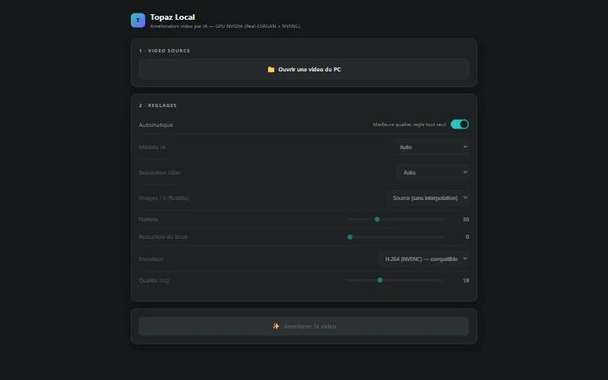
Choix de la vidéo et réglages
Fonctionnalités principales
Mode automatique : modèle d'IA choisi selon la résolution d'origine, vidéo portée à au moins 60 i/s, sortie jusqu'en 4K
Réglages manuels : modèle, résolution et fps cibles, netteté, bruit, encodeur et qualité
Installation automatique des moteurs (ffmpeg, Real-ESRGAN, RIFE), sous Windows et Linux
Sous le capot
Une chaîne de traitement en Python : analyse avec ffprobe, extraction des images, Real-ESRGAN pour reconstruire les détails, RIFE pour créer les images intermédiaires (tous deux en Vulkan), puis ré-encodage avec NVENC ou libx264.
2024 – 2025 · Projet de 1re année (SAÉ 1.05-06) · équipe de 4
Un site de présentation d'une entreprise : son histoire, ses actualités, sa situation économique et un support FAQ. Il est validé avec les outils du W3C et publié sur GitHub Pages, GitLab Pages et Bitbucket.
La page d'accueil (réalisée par moi)La page Support et FAQ (réalisée par moi)
Mon rôle
La page d'accueil, la barre de navigation, le pied de page, la FAQ et la page 404, ainsi que le planning du projet (diagramme de Gantt).
Les langages, frameworks et outils que j'utilise, avec les projets où je les ai mis en pratique.
Langages 8
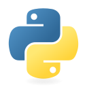
PythonStage EzDEV · AUTO YTB · Boutique de câbles
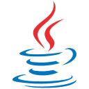
JavaPuissanceX · Pauvocodeur
JavaScriptCutLocal · GP Explorer · Clip2EP
TypeScriptParkTracker
HTML / CSSCe portfolio · Site SFR · BAMM
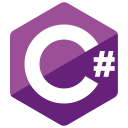
C#Unity FPS
SQLSQLBoutique de câbles · GP Explorer
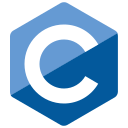
CCours à l'IUT
Frameworks 7
React NativeParkTracker (Expo)
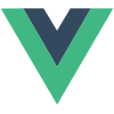
Vue.jsGP Explorer · Caisse Twirling
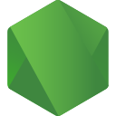
Node.jsGP Explorer (Express) · CutLocal
FlaskBoutique de câbles
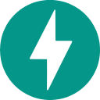
FastAPIAUTO YTB · Caisse Twirling
Three.jsCe portfolio · Clip2EP
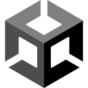
UnityUnity FPS
Données 5
PostgreSQLGP Explorer · ParkTracker
SupabaseParkTracker
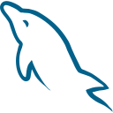
MySQLBoutique de câbles
SQLiteAUTO YTB · Caisse Twirling
MCDMeriseMCD / MLD · Boutique de câbles
Tests et qualité 7
pytest · unittestStage EzDEV
%coverage.pyStage EzDEV
CSTLibCSTStage EzDEV
JUnit 5PuissanceX
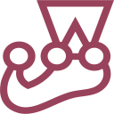
JestParkTracker
GitLab CI/CDStage EzDEV (Renovate)
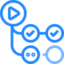
GitHub ActionsClip2EP
Outils 11
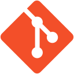
Git
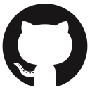
GitHub
GitLab
Bitbucket
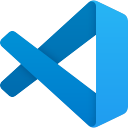
VS Code
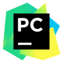
PyCharm
IntelliJ IDEA
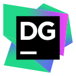
DataGrip
Vim
Linux
Windows
Gestion de projet 7
Notion
Trello
Méthode agile
Analyse des besoins
Cahier des charges
Maintenance
Documentation
Qualités personnelles 7
Autonomie
Organisation
Travail en équipe
Coordination d'équipe
Curiosité
Gestion du stress
Communication
Autonomie : ParkTracker, conçu et publié seul, du code jusqu'aux stores
Coordination d'équipe : chef d'équipe sur PuissanceX, à cinq
Organisation : stage EzDEV mené par semaines et par jalons, avec un point régulier à l'équipe
Communication : documentation et schémas pour expliquer mes outils de stage à l'équipe
Gestion du stress : 14 ans de football en club et des mises à jour publiées devant de vrais utilisateurs
Langues et notions
Français : langue maternelle
Anglais : B1, lecture de documentation technique
Notions : Kotlin, Swift, Qt, JavaFX
Parcours
Du bac à la suite de mes études, voici les grandes étapes de mon parcours, de la plus récente à la plus ancienne.
Après le BUTPoursuite d'études en cybersécurité ou en IAAvec l'envie de créer un jour ma propre entreprise. Je reste ouvert à une proposition d'emploi.
Janvier 2027Stage de 3e année chez ActemiumJ'y automatiserai des tâches de l'entreprise avec Power Apps et travaillerai avec des agents conçus dans Copilot Studio.
Avril – juin 2026Stage de développeur chez EzDEVÀ Montreux-Château, j'ai fait passer une application de gestion documentaire de Python 3.11 à Python 3.13, en automatisant ses tests.
Juin – juillet 2025Job d'été chez AuchanÀ Bessoncourt, je m'occupais de la mise en rayon et du réapprovisionnement.
2024 → 2027BUT Informatique à l'IUT Nord Franche-ComtéÀ Belfort, dans le parcours Réalisation d'applications. J'ai validé ma 2e année et je suis aujourd'hui en 3e année.
2024Baccalauréat STI2DSpécialité Systèmes d'information et numérique, où j'ai acquis mes premières bases en programmation.
Veille informatique
Les outils changent vite : je garde un œil sur ceux que j'utilise, et j'écris ici ce que j'en retiens. Mes sources, les sujets que je suis en ce moment, puis mes notes de veille.
Mes sources
Notes de version officielles (python.org, MDN, blogs des frameworks) : savoir ce qui change vraiment avant de mettre à jour
GitHub : lire le code d'autres projets et suivre les versions des bibliothèques que j'utilise
Stack Overflow : comprendre une erreur et retenir les bonnes pratiques
Reddit (r/Python, r/webdev, r/reactnative) : l'actualité des langages et les retours d'expérience
Assistants de code IA : un gain de temps, à condition de tout relire
Un code généré qui a l'air juste n'est pas forcément un code sûr.
Les assistants de code écrivent vite un code qui a l'air juste. Le risque est ailleurs : une fonction qui ne gère pas un cas limite, ou une bibliothèque qui n'existe pas. Des attaquants publient justement des paquets portant ces noms inventés, pour piéger ceux qui installent sans vérifier.
Ma règle sur mes projets : je ne garde que le code que je comprends, chaque dépendance est vérifiée sur son dépôt officiel, et rien n'est livré sans être testé.
Ce que j'en retiens
L'IA change la façon de coder, et c'est aussi pour cela que la cybersécurité et l'IA sont les deux domaines dans lesquels j'aimerais poursuivre mes études.
Web·2 min de lecture
WebCodecs : monter de la vidéo 4K sans quitter le navigateur
Le navigateur sait enfin décoder et réencoder la vidéo, image par image.
Pendant longtemps, le navigateur savait lire une vidéo, mais pas la découper image par image ni la réencoder. L'API WebCodecs donne enfin accès aux décodeurs et encodeurs de la machine, y compris ceux de la carte graphique.
C'est ce qui rend possible CutLocal, mon éditeur vidéo local : décoder sur la carte graphique, appliquer les effets en WebGL2, puis réencoder, sans rien envoyer sur un serveur. Le piège : la mémoire. Chaque image décodée doit être libérée à la main, sinon la lecture s'effondre en quelques secondes.
Ce que j'en retiens
Une API récente ouvre des usages nouveaux, mais il faut lire sa documentation jusqu'au bout et tester sur plusieurs navigateurs.
Python·2 min de lecture
Python 3.13 : une seule ligne peut empêcher une application de démarrer
Des modules disparaissent de la bibliothèque standard : mieux vaut le savoir avant de mettre à jour.
Python 3.13 retire de la bibliothèque standard une vingtaine de modules anciens (cgi, crypt, telnetlib, imghdr…), et imp avait déjà disparu en 3.12. Un programme qui les importe, lui ou l'une de ses dépendances, s'arrête dès le lancement.
Je l'ai vérifié sur mes propres projets : un vieux TP Flask de 1re année contenait un from crypt import methods ajouté par erreur par l'autocomplétion. Inutile depuis toujours, cette ligne suffit à faire planter l'application sous Python 3.13.
Ce que j'en retiens
Avant une montée de version, on fait l'inventaire de ce qu'on importe vraiment. C'est exactement ce que fait le script d'analyse que j'ai écrit pendant mon stage chez EzDEV.
Contact
Merci de votre visite ! Une formation en cybersécurité ou en IA, un projet, une proposition d'emploi ou une simple question : écrivez-moi, je vous réponds rapidement.